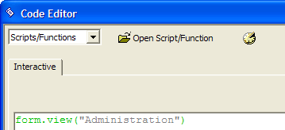
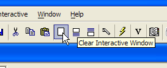
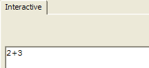
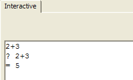

Learning Xbasic "Interactively"
In Figure 11, you can see that one of the options on the drop-down menu when you select the New code button is the Interactive window. This window is a Code Editor like the one we used in Exercise 1 to open the Load Last Record script. In that exercise, we ran the script with the Run button. When the script ran, Alpha Five performed all the Xbasic commands in the script in sequence (line-by-line) until the script ended. Of course, the script only had two lines of Xbasic code. But, the point is that the whole script is run at one time.
The Interactive window is different. The Interactive window will run each line of code as you enter it. A line of code is entered when you finish typing a single line and then press the Enter key. At that point, Alpha Five checks the code to make sure it is valid. (If you make a spelling mistake or type an Xbasic command incorrectly you will see an error message). If it is valid, Alpha Five executes the line of code right away.
For example, in Exercise 1 we looked at a script whose first line of code was:
|
Form.View("Administration") |
This line of code will immediately open the Administration form when you enter it in the Interactive Window. You will try the Interactive window in the next exercise.
|
The Interactive window can be opened by:
|
Exercise 2 - Using the Interactive window
If the Phone Messages database is not still open from Exercise 1, open it now.
Close the Administration form window if it is open.
Open the Interactive window using one of the techniques described in the side bar.
Now type the following Xbasic command in the white text area. But do NOT press Enter yet. While you are typing, you will see Alpha Fives bubble help appear. For now, just ignore the bubble help and type the entire command as shown in Figure 12.
When you have entered the command exactly as above, press the Enter key.
Right-Click on the Administration window button on the window bar at the bottom of the screen and choose the Close command.
Now locate the Clear Interactive Window button on the Menu Bar (see Figure 13) and press it.

Figure 12
Alpha Five executes the command and the Administration form displays in View mode. The window you closed in Step 2 is re-opened interactively.
The form view closes and the Interactive Code Editor is reloaded.

Figure 13
|
Bubble Help is a fantastic feature of Alpha Five that helps you to complete entering commands by letting you select entries from lists of Xbasic commands and lists of appropriate parameters. We will learn more about bubble help below. |
The Interactive windows contents are erased.
Type: 2+3 and press Enter.

Figure 14
|
The Clear Interactive Window button will clear the whole Interactive Window. The other two buttons next to it will clear, respectively, the window above your current line and the window below your current line. The current line is the line where your cursor is blinking. |
Nothing seems to have happened. The cursor moved to the next line, but did anything else happen? Actually the answer is yes. Each time you enter an expression, Alpha Five checks to see if it is valid. In this case, you entered a perfectly valid arithmetic expression. And Alpha Five even calculated the answer. However this particular command does not trigger anything to display on the screen When you entered the Form.View("...") command above, Alpha Five did display the form, since that command by definition causes a form to be displayed.
In order to see the output of this expression, you must precede it with a question mark (?).
Type: ? 2+3 and press Enter.

Figure 15
Now Alpha Five displays the answer on the next line. In fact, you can use the Interactive Window as a calculator by typing in any expression you like. Just remember to precede it with a question mark to see the answer.
|
An expression is like an arithmetic formula. It is a sequence of Xbasic commands and operators (like +, -, *, etc.) that is syntactically valid. Syntactically valid means you have spelled everything correctly and included any characters (like a period) that is part of the command so that Alpha Five understands the command you have entered. If you type an expression or command that is invalid you will get an error message. All standard arithmetic formulas are valid expressions. Alpha Five knows what to do when you ask it to calculate 2 + 3 or ((200 * 320) / 15). However, just because a command is syntactically correct does not mean it will work correctly. When you typed the command: Form.View("Administration") Alpha Five found a form named Administration and performed the command. If you had typed: Form.View("Administrate") Alpha Five would attempt to perform the command because it is syntactically correct. But, since there is no form in the Phone Messages database named Administrate, Alpha Five would show (in the Interactive window) this error message: ERROR: Form not found:Administrate |
Next